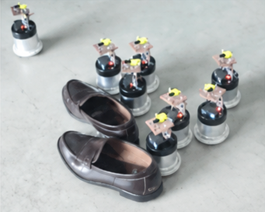
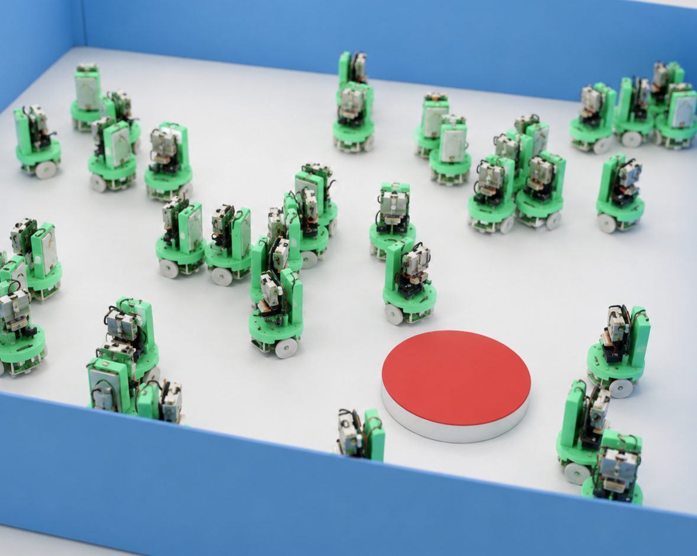
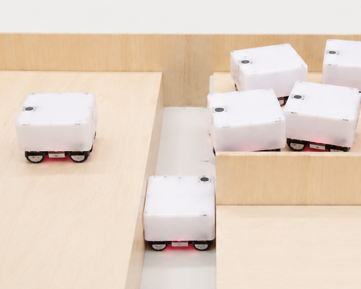
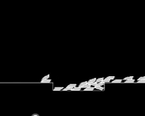
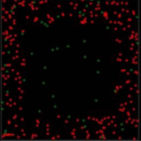
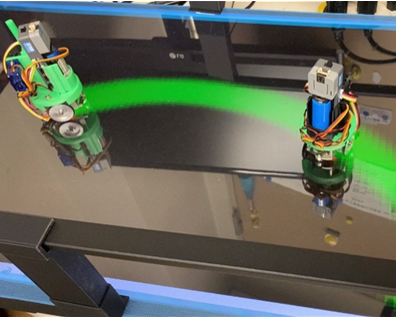

群ロボット
Swarm Robotics

コンピュータに
「センサをつける」
「手足をつける」
群知能ロボットとは、多数の比較的単純なロボットが協調して行動することで、全体として高度で柔軟な機能を実現するロボットシステムのこと。このゼミでは「No Intel, No WiFi」をモットーとして、「しくみは単純だけど、たくさんいるからできる」ことを探究しています。
研究事例
みんなで運ぶロボット１（協力している“ようにみえる”）
ロボットたちが「菅原の靴」を運んでいます。これはまるで協力しているように見えます。でも実は、「一緒に運ぼう」といった命令は組み込まれていません。それぞれが自分のルールに従って動いているだけなのに、結果として自然な協調が生まれています。
みんなで運ぶロボット２（“運ぶつもりが全くない”のになぜか運べる）

空間にたくさんのロボットがいると、ちょっと不思議で面白い原理によって「モノ運び」が実現できます。このロボットシステムは「ブラジルナッツ効果」にヒントを得たものです。赤い円盤（＝モノ）は、ロボットたちによって目的地まで運ばれていきますが、実はどのロボットも「モノを運ぼう」とは思っていません。それぞれが自律的に動いているだけなのに、結果としてモノが押されながら、少しずつ目的地へと移動していきます。
損失を活かすロボット

群知能ロボットの大きな特徴のひとつとして、「一部の個体が損失を受けても、集団全体としての利益が得られるような選択ができる」というものがあげられます。たとえば、このロボットたちは、それぞれ「左端のゴールに向かいたい」「溝には落ちたくない」というシンプルなルールに従って自律的に動いています。しかし、実際の動きの中では、全員が溝を避けようとしても、集団の圧力や配置の影響で一部のロボットが押し出され、結果的に溝に落ちてしまいます。けれどその“落ちた”ロボットが溝を埋めることで、他のロボットたちはゴールへ到達できるようになります。このように、個々のロボットが協調の意識を持っていなくても、集団としての合理的な行動が自然に生まれることがありえます。
環境を改変するロボット

原理は先の「損失を活かすロボット」に準じますが、この行動は、損失を通じて環境を改変する例として示しています。一部のロボットが溝に落ちることで、その溝が埋まり、以後のロボットは安全に通行できるようになっています。個体の損失が、集団の行動を支える“環境整備”として機能している、といえます。
構造物を構築するロボット

群知能ロボットが得意とするタスクのひとつに「構造物の構築」があります。特に注目されるのは、中央制御なしに分散型ロボットが自律的に動き、目的の構造を形成するという課題です。構造物には、完成後に形が固定される静的構造物（ビルや橋）と、構成要素が常に変化し、修復や強化が可能な動的構造物（生体など）の2種類があります。菅原ゼミでは、後者の動的構造物に着目し、群ロボットによる柔軟で再構成可能な構造の実現に向けて、アルゴリズムの探究を進めています。
化学コミュニケーションロボット

群知能ロボットでは、ロボット間のコミュニケーションが重要です。通常は電波や光などの物理的シグナルが使われますが、自然界ではフェロモンのような化学的シグナルが広く利用されています。これらは物理的シグナルにはない特性を持ち、群ロボットにも有効です。菅原ゼミでは、CGとカラーセンサを使った疑似化学シグナルを構築し、協調行動の実現を試みています。